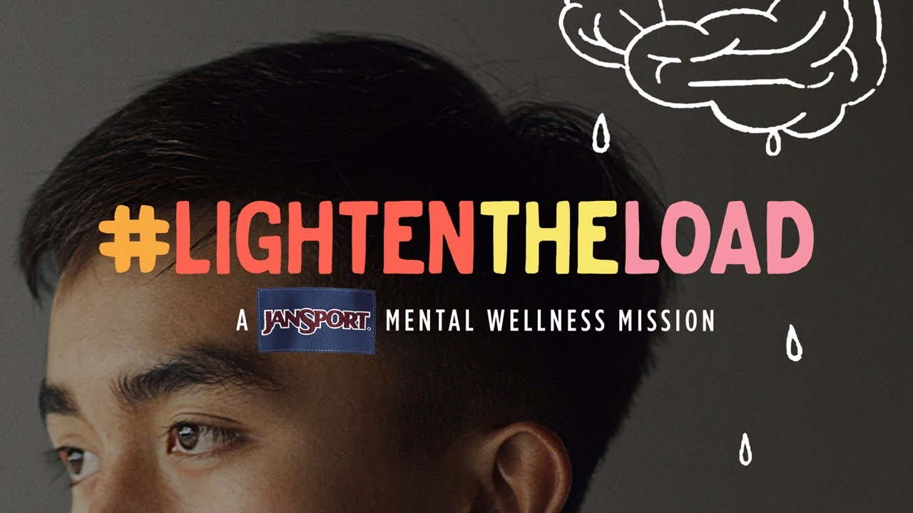

Resources for Support
Hotlines
Support Groups
National Alliance on Mental Illness (NAMI) Support Groups
Mental Health America (MHA)
Therapy
The most popular type of therapy utilized by people with mental health conditions is psychotherapy. This is also known as "talk therapy" where you talk with a therapist or counselor, who can deal with thoughts, behaviors, symptoms, stresses, goals, past experiences and other areas that can promote your recovery. It can offer an emotional release and a sense of being heard, understood and supported!

There is online therapy and in-person therapy. Each one has their advantages and disadvantages, and it is ultimately up to you to decide what process works best for you.
Ways to Get Involved
Campaigns

World Health Organization (WHO): World Mental Health Day Campaign
CLICK IMAGE TO LEARN MORE

JanSport: Lighten the Load
CLICK IMAGE TO LEARN MORE
Maybelline New York: Brave Together
CLICK IMAGE TO LEARN MORE